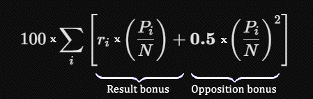

Chess pairings typically do not employ randomization. The exception is the first round in Berger and Monrad, where
the players are drawn randomly into an ordered list that then determines who faces whom in the opening round. From
that point onward, the process is entirely deterministic. In Swiss pairings, chance plays no part at all, since the
starting order is seeded, usually by rating. Thus, the algorithm contains no built-in element of randomness. It is
the players themselves who introduce variation through their more or less unpredictable results.
The Monrad system is named after the Danish chess organizer Poul Monrad, who during the mid-20th century developed and popularized this simplified variant of Swiss pairings. It became widespread in Denmark, Norway, and Sweden, particularly in school competitions, weekend tournaments, and larger amateur events, because it is simpler than the complete Swiss system: players are paired strictly according to their current score, without the more complicated FIDE restrictions.
In Monrad (simplified Swiss), a certain unfairness can initially arise, as one top player may face a strong
opponent while another receives a significantly weaker one. For this reason, elite tournaments prefer some form of
Swiss pairing. Another drawback is that a player may be assigned the same colour for three consecutive rounds, and in
rare cases even more. In a seven-round tournament, roughly 34% of the players are likely to experience this at least
once, and in a nine-round tournament the proportion rises to about 45%. This is a significant weakness of the Monrad
system if it is used in elite tournaments. In amateur tournaments, however, it may not matter as much, since wins and
losses there depend less on which colour one gets and more on who makes the first mistake.
The above applies to Danish-Swedish Monrad. According to FIDE’s official rules, a player may not have the same
colour three times in a row, nor may they have a colour balance that deviates by more than ±2. (Dutch Swiss
follows this rule, except in rare cases.) The Norwegian Monrad system is less strict: a player may never have more
than three consecutive games with the same colour, and if possible no player should have more than
50% + 1 games with the same colour (see here). These rules are not absolute and may, in exceptional
cases, be overridden.
I have created a program in JavaScript for Danish-Swedish Monrad here: Monrad Pairing System. The program introduces a new tie-break method as an
alternative preset: for each game, take the opponent’s final score as a decimal between 0 and 1 (for example,
0.8 for 80% of the maximum score). Square it to amplify the differentiation. Then multiply by the result against that
specific player, which yields full points for a win, half for a draw, and also some return for a
loss — especially against a successful player. Finally, multiply by one hundred to avoid
decimals. I provisionally call it WNT, a name derived from the letters of my surname. Until now, all tie-break
systems (Buchholz, Sonneborn-Berger, etc.) have been designed around the principle of being easy to calculate by
hand. The result is a coarse tie-breaking mechanism. There is no reason to hold on to that legacy today.
WNT Score = 100 × ∑i [ (Pi / N ) × (ri + Pi / (2N ) ) ]
Alternative form:

∑i = the sum over all opponents you have faced
ri = your result against opponent i (1, ½, 0)
Pi = opponent i ’s final score in the tournament
N = total number of rounds in the tournament
Pi / N = the opponent’s score share (score ratio expressed as a decimal between 0 and 1)
This method provides a fairer reflection of player performance than traditional tie-break systems. When players
finish tied on points, they are separated based on the quality of the opposition they have faced. WNT consistently
rewards those who actually play on the top boards. Those who face and score points against the tournament’s
best players are rewarded quadratically and disproportionately higher than those who gather their points on
the lower boards, rendering the tournament strategy known as the “Swiss gambit” virtually useless in
practice. In traditional Buchholz, a player who suffers an early loss and picks up points on lower boards against
weaker opposition can often still obtain a surprisingly high Buchholz score, as opponents’ points are summed
linearly. In WNT, thanks to the squaring, this gap is widened substantially. At the same time, facing a strong
opponent yields a return even in defeat.
Unlike truncated systems (such as Buchholz Cut), there are no artificial thresholds. Every half-point an opponent
fights for increases a player’s WNT, but it is encounters at the top boards that ultimately make the
difference. Sonneborn-Berger was originally developed for round-robin tournaments (all-play-all) and is less suited
for Swiss-system and Monrad tournaments. Although WNT is designed specifically for the latter, in round-robin
tournaments the algorithm reduces mathematically to the same relative ranking produced by the classic
Sonneborn-Berger system, making WNT applicable across all tournament formats.
WNT integrates the advantages of opponent strength or schedule difficulty (Buchholz) and individual performance or
win quality (Sonneborn-Berger) into a single, unified metric, rather than treating them as separate, sequential
filters where the latter rarely comes into play — such as in this cumbersome tie-break hierarchy:
direct encounter → Buchholz Cut 1 → Buchholz (full) → Sonneborn-Berger → most
wins / most games with black. It allows the tournament organizer to display a live WNT score throughout
the tournament, a meaningful measure that can only increase. Thanks to WNT’s high mathematical resolution, the
likelihood of two players finishing with exactly the same decimal score is practically negligible. (Consider the
following two PDF files of a simulated Monrad tournament, in which the final standings are determined by WNT and
Buchholz, respectively: file 1, file 2.)
Tie-break systems reflect an important principle: the final score alone does not tell the whole story. Two players
may finish a tournament on the same score, even though one has fought through considerably stronger opposition than
the other. To ignore this difference is to treat two fundamentally different achievements as equivalent. Tournament
points alone are therefore too crude a measure of success.
The score shows how many points you earned. The tie-break shows how difficult they were to earn.
My online version of the Norwegian system is available here: Monrad Tournament Manager. The final standings is sorted
according Buchholz (Cut 1). Both can be used online, but the page itself can also be downloaded and run locally. The
Danish-Swedish version uses either cumulative (progressive) score or Buchholz (the opponents’ total score) to
differentiate players with the same final result. Cumulative score is defined so that early wins yield a higher
tiebreak, which favours an aggressive playing style. (Starting with a win and then a loss gives 2 cumulative points
after two rounds, whereas two draws give 1.5. In a sense, this can be considered fair.)
Berger means that every player meets every other player, either once or twice. It was formalised by Johann Berger in the late 19th century. It is the fairest of all pairing systems, which makes it ideal for Candidates tournaments and elite events. Players alternate colours automatically. I have created a Berger system for 3-16 players according to FIDE specifications. It can be used directly in the browser, but can also be downloaded and run locally: Berger Tournament System.
Scheveningen is a team-play format in which two teams of equal size meet in a full cross-pairing: every
player in Team A faces every player in Team B over n rounds: Scheveningen Chess Manager. It takes its name from a tournament in
Scheveningen, the Netherlands, in 1923, where the format was used in a team match between two groups of grandmasters.
The system is fair and deterministic (no arbitrary pairing is required) and it therefore spread quickly. This format
can also be used within a club by dividing the players into two evenly matched teams. It then becomes both an
individual tournament and a team match, which can be quite stimulating.
As a tie-break method, the program uses Koya as the primary criterion and Sonneborn-Berger as the secondary
criterion. The Koya score is the sum of the points a player has scored against opponents who finished with at least
50% of the maximum possible score. Koya thus measures how well a player has performed against the strongest
opposition in the tournament, whereas Sonneborn-Berger provides a more fine-grained and comprehensive measure based
on the combined results of a player’s opponents.
The Swiss system originated in Switzerland in the late 1800s, primarily to handle large chess tournaments where a round-robin format was impractical. Early Swiss events were informal and used simple rules: players with the same score were paired together, much like the modern Monrad system. Swiss systems are today constructed in various ways. These include double-accelerated Swiss, Haldane acceleration, and FIDE acceleration (now rare). Certain variants, however, perform very poorly, among them Nordic Swiss (see here). A typical problem for intermediate players is that they oscillate between overly strong and overly weak opposition: in one round they face a significantly stronger player, in the next a clearly weaker one, and then once again an overly strong opponent. This oscillation diminishes the enjoyment of the tournament and produces an uneven tournament experience. In my accelerated Swiss system, this does not occur: Swiss Tournament System. The program includes a safeguard that makes it highly unlikely for a player to receive the same colour three times in a row. It is distinctly superior to Nordic Swiss, provided that the program proves reliable after thorough testing.
Accelerated Swiss Pairing (Winther acceleration):
Round 1: Players are divided into four groups (quadrants). The highest-ranked player in Q1 plays White
against the highest-ranked player in Q2, and correspondingly for Q3 and Q4. (For uneven groups, sizes are adjusted
automatically, and with an odd number of players, the lowest-ranked gets a bye).
Round 2: Highest-seeded winner plays Black against the highest-seeded winner in the other half. Second
highest-seeded plays Black against the next in the other half, and so on.
Round 3+: Standard Swiss pairings begin. Players are sorted by score, Buchholz, and initial seeding. Pairings
are generated top-down.
Colour allocation: The player with fewer White games receives White. If equal, the lower-seeded player
receives White. Absolute colour balance is guaranteed (colour difference can never reach 3). If colour balance
conflicts with the 2-in-a-row rule, up to three games in a row with the same colour is permitted.
This system is well suited for open tournaments. Elite players have little reason to object, as they face lower-ranked players in the first two rounds. At the same time, it avoids the oscillation from which intermediate players often suffer in other Swiss pairings. The program uses Buchholz as a secondary sorting criterion when pairing players, after score. Buchholz is stable, well-known, and harmonizes with the objective that players who have faced similar opposition should be paired. Buchholz is standard in international Swiss tournaments, making the system compatible with established practice.
Having the winners in the second half receive White against the winners in the first half in round two is, in my view, a good idea — all players will be pleased. From round three onward, players with similar ratings meet each other more consistently. Generally, top players prefer Black against weaker opposition and White against stronger. The program accommodates this by granting White to the lower-ranked player when the number of White games played is tied. The program minimizes the number of players who receive Black in the first two rounds. Since the higher-seeded player is normally assigned White in the first round, this situation cannot occur for players in the first and third quarters of the initial ranking list. I do not yet know how the overall rating distribution affects the pairings, but that can be investigated using the program.
The fundamental problem of Swiss pairing is that it attempts to achieve a fair tournament within a limited number
of rounds, without being able to employ the ideal round-robin format. Therefore, the system must both produce
high-quality pairings and simultaneously be perceived as fair by the players. Many Swiss variants fall short in this
respect, especially when the intermediate bracket oscillates between overly strong and overly weak opposition, or
when the colour allocation becomes unreasonable. Furthermore, FIDE’s current rules are complex and convoluted,
making them less transparent to participants.
The proposed variant is an attempt to combine simplicity with stability: the first two rounds provide a controlled
acceleration where elite players meet lower-ranked opponents, while the intermediate bracket avoids the oscillation
that otherwise detracts from the joy of playing. From round three onward, players with similar ratings meet each
other with increasing frequency, lending the tournament a natural progression. The fact that Buchholz is used as a
secondary criterion harmonizes with the objective that players with similar opposition should meet, and the colour
rule (which guarantees that no one is assigned the same colour three times in a row) eliminates one of the most
disruptive elements in certain other systems.
Overview of Pairing Systems
| System | Basic Idea |
|---|---|
| Berger | Everyone plays everyone else according to a predetermined round schedule (Round Robin). |
| Scheveningen | Two groups or teams play each other, with every player facing all players in the opposing group. |
| Monrad | Players with the same or similar scores are paired against each other. |
| Dutch | Maximizes pairings within score groups according to a strict hierarchy of rules and criteria. |
| Accelerated Swiss | Modifies pairings in the early rounds to separate stronger and weaker players more quickly. |
| Dubov | Equalizes the players’ average opponent ratings within score groups. |
| Burstein | Equalizes the strength of players’ opposition based on actual tournament results. |
| Lim | Optimizes pairings globally according to mathematically defined fairness criteria. |
FIDE Swiss (“Dutch”) is the international gold standard for chess tournaments and the official
system prescribed by FIDE for most open Elo events as of 1 February 2026. Its purpose is to achieve the fairest
pairing possible. The algorithm, which is highly complex (see
here), was first published in 2023-2024 by FIDE’s Technical Commission and was established as the official
system in 2026, effective from 1 February 2026. It replaces the earlier Dutch (2009) and Dutch (2017), which were
used in some tournaments but never became a global standard. It is a modern algorithm developed by FIDE to reduce
colour imbalance, reduce float chaos, increase determinism and reproducibility, and avoid predictability in the top
standings. FIDE’s requirement that the system be deterministic and reproducible means that the same input
yields the same pairing, no “human judgement” may occur, and no subjective choices are allowed. In
practice, it is impossible to pair Dutch (2026) by hand, as the procedure is extremely cumbersome and computationally
intensive.
The reason the Dutch system has become the norm is how it balances sporting fairness, colour allocation, and a clear
differentiation of the participants. The system has the strictest colour rules of all Swiss methods. A player may
never have the same colour three rounds in a row (with exceptions only in extreme cases in the very last round). The
algorithm also strives to ensure that no player ever has more than one additional white or black game compared
to their opponent. Many other Swiss systems allow greater imbalances, which often leads to players being
disadvantaged with several black games in decisive stages. The Dutch system is held to deliver the highest standard
of sporting integrity: it maximally protects colour allocation and ensures that players with the best results meet
each other towards the end of the tournament.
I have created an experimental version here: Dutch Pairing System. As it
has not been verified, the program is not valid for Elo tournaments. If the program proves to work, it can still be
used for blitz and rapid tournaments, but the pairing should then be labelled “modified Dutch” or
something similar. The program can be used to test the algorithm, which GPT-Sol (AI) has verified as working
correctly.
In the Dutch system, having two consecutive black games is normal. Three black games in a row is generally forbidden,
with rare exceptions in the last round. Four black games in a row is never possible. A player may in some cases
finish the tournament with two more black games than white. A colour difference of -3 or more is something the system
actively tries to avoid for top scorers and their opponents. Players are ranked by score and then by TPN (Tournament
Pairing Number). This follows the same principle as classical Monrad: (1) seeding, (2) strict pairing by
order, (3) no acceleration rules.
From the player’s perspective, the system is significantly more unpredictable than classical Monrad. The final
pairing is often impossible to foresee. The algorithm attempts to optimise across 16 different quality criteria.
Players with the same score do not necessarily meet each other, and one may face someone with a completely different
TPN than expected. Colour allocation is complex and not intuitive.
The Dubov Swiss system is an original method developed by the Russian mathematician Eduard Dubov. The
system, which is approved by FIDE, actively strives to ensure that all players finishing on the same score have faced
opponents with as similar an average rating as possible. The aim is to reduce the risk that a player reaches a
prize-winning position thanks to luck in the pairings and thus unusually weak opposition compared with competitors on
the same score.
However, the method is less intuitive for players and spectators. In a conventional Swiss system, the players ranked
first and second will naturally meet as the tournament approaches its end. In the Dubov Swiss, two players in clear
shared lead may very well not meet, simply because the system judges that one of them needs to face a
higher-rated opponent in order to balance his ARO value (Average Rating of Opponents). FIDE Dutch, by contrast, is
designed to produce a clear winner through top-group elimination, whereas the Dubov system is designed as a
statistical measurement instrument: its goal is to give the entire field as fair and comparable an assessment of
playing strength as possible. The Dubov system is mathematically elegant but has remained a niche option for
practical and psychological reasons. It is, however, ideal for tournaments aimed at further qualification, such as
the Candidates Tournament. I have created a pairing program that follows FIDE’s specifications: Dubov Swiss Pairing System.
The Burstein Swiss System was developed in 1993 by Almog Burstein (born 1950), an Israeli international
arbiter (IA), chess organizer, and long-time FIDE official. The core philosophy is to equalize the strength of
opposition among players (or teams) in the same score group. It was famously adopted by FIDE for team competitions
and served as the pairing system used in Chess Olympiads from Moscow 1994 through Dresden 2008. It remains one of the
officially recognized pairing systems in the FIDE Handbook.
The Burstein system uses a hybrid method. It begins with Dutch seeding: the first half of the scheduled rounds,
rounded down and capped at four, are paired using the FIDE Dutch system. In subsequent rounds, players are divided
into scoregroups and ranked within each bracket by Buchholz, Sonneborn-Berger, and then ascending TPN. Pairings
generally match the highest-ranked available player with the lowest-ranked compatible player. Floaters (players
paired against an opponent from a different score group) and any pairing-allocated bye (unpaired round) are selected
according to prescribed priorities, while avoiding repeat opponents, respecting absolute color restrictions, and
minimizing unmet color preferences. My implementation is here: Burstein Pairing System.
The Lim Swiss System is named after its developer, Professor Lim Kok Ann of Singapore (1920-2003), a
former FIDE Secretary-General and long-time chess organizer. Approved by the FIDE General Assembly in 1987, it is one
of FIDE’s officially recognized Swiss pairing systems.
Unlike the standard Dutch system, which pairs scoregroups sequentially from the top downward, the Lim system employs
a two-sided, outside-in approach: pairing begins with the highest scoregroups working downwards towards the
median, then alternates to the lowest scoregroups working upwards, pairing the median scoregroup last. The algorithm
strives to pair players with equal or similar scores while strictly regulating colour balance and floater
classification. FIDE’s Olympiad team pairing system incorporates similar convergence principles adapted for
teams. My implementation is here: Lim Pairing System.
© Mats Winther, 2026.
References
‘Buchholz system’. Wikipedia.
https://en.wikipedia.org/wiki/Buchholz_system
‘General Regulations for Competitions. Annex 1: Details of Berger Table’. FIDE Handbook.
https://handbook.fide.com/chapter/C05Annex1
‘General Rules and Technical Recommendations for Tournaments. 04. FIDE Swiss Rules. C.04.3 FIDE
(Dutch) System’. FIDE Handbook.
https://handbook.fide.com/chapter/C0403202602
‘General Rules and Technical Recommendations for Tournaments. 04. FIDE Swiss Rules. C.04.4 Other
FIDE-approved Pairing Systems. C.04.4.2 Burstein System’. FIDE Handbook.
https://handbook.fide.com/chapter/C040402202602
‘General Rules and Technical Recommendations for Tournaments. 04. FIDE Swiss Rules. C.04.4 Other
FIDE-approved Pairing Systems. C.04.4.1 Dubov System’. FIDE Handbook.
https://handbook.fide.com/chapter/C040401202602
‘General Rules and Technical Recommendations for Tournaments. 04. FIDE Swiss Rules / C.04.4 Other FIDE-approved
Pairing Systems / C.04.4.3 Lim System’. FIDE Handbook.
https://handbook.fide.com/chapter/C0403202602
‘General Rules and Technical Recommendations for Tournaments. 07. Play-Off and Tie-Break Regulations 07.
Tie-Break Regulations’. FIDE Handbook.
https://handbook.fide.com/chapter/TieBreakRegulations032026
‘Norges Sjakkforbunds Monradsystem’. Sjakktuelt.
https://2000.sjakk.no/kunnskap/systemer/norges-sjakkforbunds-monradsystem/
‘Scheveningen system’. Wikipedia.
https://en.wikipedia.org/wiki/Scheveningen_system
‘Sonneborn-Berger score’. Wikipedia.
https://en.wikipedia.org/wiki/Sonneborn%E2%80%93Berger_score
‘Swiss-system tournament’. Wikipedia.
https://en.wikipedia.org/wiki/Swiss-system_tournament
Online pairing programs:
Berger Tournament System (Round-Robin).
https://mats-winther.github.io/berger-eng.htm
Burstein Pairing System
https://mats-winther.github.io/fide-burstein-eng.htm
Dubov Swiss Pairing System
https://mats-winther.github.io/fide-dubov-eng.htm
Dutch Pairing System
https://mats-winther.github.io/fide-dutch.htm
Lim Pairing System
https://mats-winther.github.io/fide-lim-eng.htm
Monrad Pairing System (Danish-Swedish model).
https://mats-winther.github.io/monrad-eng.htm
Monrad Tournament Manager (Norwegian model).
https://mats-winther.github.io/norwegian-monrad.htm
Scheveningen Chess Manager (two teams in cross-pairing).
https://mats-winther.github.io/scheveningen-eng.htm
Swiss Tournament System (Winther acceleration).
https://mats-winther.github.io/swiss-eng.htm